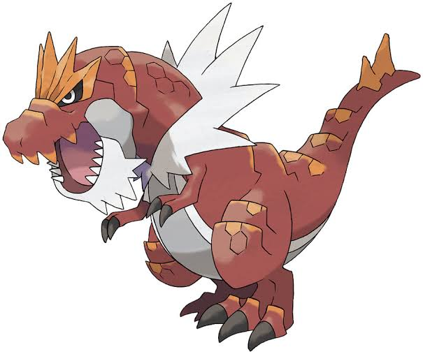
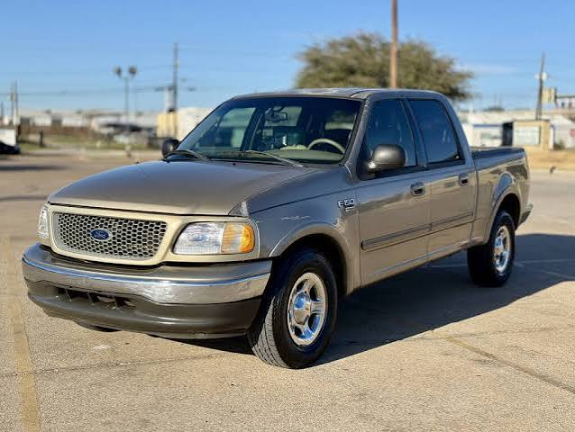
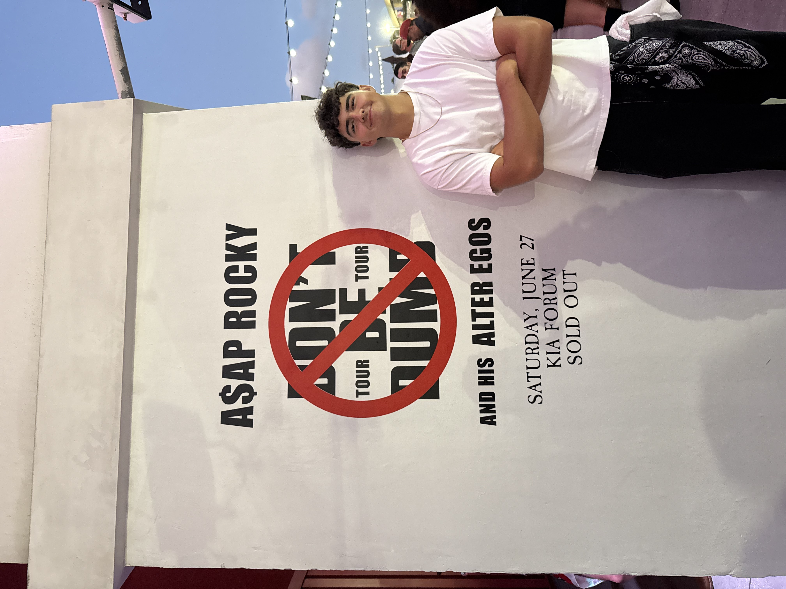

Here are images of my two favorite Pokemon! Both are reptilian and crocodile-related. The dino one is called Tyrantrum and is a prehistoric Pokémon. The other one is named Totodile (the blue one); it is a starter for Gen 2 and has two more evolutions after this one. I collect cards all the time and try to just get ones that look amazing. It doesn't matter to me how popular they are, but more the art and story behind the cards themselves. It just brings me so much joy.


I am also a fan of trucks and cars. I have a Ford F-150 from the year 2000 and it has 300,000 miles on it, but recently it has been making some funny noises. I recently started to look at other cars too, but I am certain I will find one that is fit for me.

Some cars I have thought about are:
- Corvette C5
- Subaru WRX (2000)
- Silverado (1995)
This is me when I went to an A$AP Rocky concert
I started to go to a lot of concerts. It is so awesome to see those artists live and hang with friends getting these experiences. I also love getting to take inspiration from the sets and lighting to use in future projects, perhaps.
